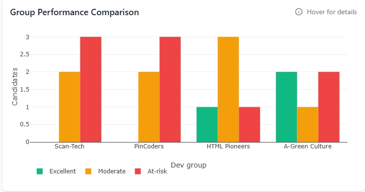

01 / Forecasting workflow
Time series data auditing and forecasting experiments
PythonTime seriesData quality
Challenge
Large time series datasets can hide missing values, gaps, duplicate timestamps, and incomplete periods that distort model evaluation.
Strategy
Audit data before modelling, check timestamp integrity and missingness, and evaluate forecasts with chronological holdout data rather than random shuffling.
Execution
Audited a household electricity dataset, reviewed timestamp coverage, checked duplicates and gaps, and counted complete hourly bins.
Results
The recorded audit covered 2,075,259 rows and 9 columns, from 16 December 2006 to 26 November 2010. It identified 34,085 complete hourly bins. These are data audit results, not forecasting accuracy claims.
Next step: publish the baseline, test window, forecast horizon, MAE or RMSE, and residual checks before reporting predictive performance.
Explore ForecastLab repository ↗
02 / Predictive research
Neural networks and demographic modelling
PythonMLPGAMLee Carter
Challenge
Mortality patterns change over time and differ across populations. Models need to capture useful structure rather than simply fit historical observations.
Strategy
Compare a multilayer perceptron with established demographic and statistical approaches using defined training and evaluation periods.
Execution
Initial experiments used Human Mortality Database data for Czechia and Slovakia. A broader prepared dataset contained 268,000 observations across 20 countries.
Results
The recorded MLP experiment reduced MAE from 0.00600 to 0.00377, approximately 37.2%. Interpret this alongside the baseline, test split, response scale, and evaluation procedure.
03 / Quantitative modelling
JSE ALSI and S&P 500 volatility research
RPythonGARCHLSTM
Challenge
Financial returns often exhibit volatility clustering, where periods of large movements tend to be followed by further large movements.
Strategy
Use time series diagnostics and conditional volatility models, then compare statistical and machine learning approaches with a consistent out of sample design.
Execution
The research examines the JSE All Share Index and S&P 500 from February 2012 to February 2025, with GARCH family models and neural network methods.
Results
Present model rankings and forecast errors only alongside the final evaluation setup. Useful evidence includes residual diagnostics, forecast loss, and simple benchmark comparisons.
Suggested visuals: index returns, estimated conditional volatility, forecast versus realised volatility, and an out of sample error table.
Explore GitHub profile ↗
04 / Full stack data product
Interactive analytics for South African and US equities
ReactTypeScriptFastAPIPostgreSQLDocker
Challenge
Market data is easier to interpret when price history, returns, statistical diagnostics, and risk measures are brought together in one interactive workspace.
Strategy
Combine a typed React interface with a Python API and structured storage, while separating data access, analytical functions, and visualisation components.
Execution
The repository documents a JSE and US market data pipeline, REST API, dashboard, and individual stock pages with interactive price charts, volume, moving averages, and return and volatility summaries. The codebase also includes dedicated modules for statistical tests, risk measures, volatility analysis, and forecast evaluation.
Results
StockLens demonstrates an end to end analytics application, from data ingestion and API design to statistical analysis and interactive charts. The project is for education and research, not trading recommendations or financial advice.
Technical design: React, TypeScript, Tailwind CSS, FastAPI, SQLAlchemy, PostgreSQL, statsmodels, arch, and Docker. The README describes some modelling and portfolio capabilities as planned, so those are not presented here as completed features.
View StockLens source code ↗
05 / Applied analytics
Dashboarding and performance reporting
Challenge
Performance data from different sources needs to be structured consistently before it can support monitoring and decision making.
Strategy
Prepare and reconcile source data, define meaningful indicators, and build a dashboard that makes trends and comparisons easier to inspect.
Execution
Showcase data preparation, analytical logic, dashboard design, and the reasoning behind selected metrics. Separate personal contributions from team contributions.
Results
Add verified reporting improvements or stakeholder feedback when available. Avoid claiming quantified business impact without measurement.
